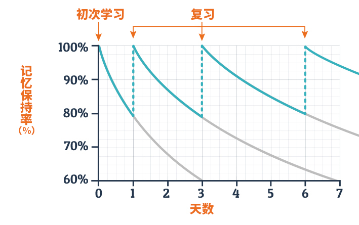

复习任务生成规则：
1. 本平台是根据艾宾浩斯遗忘曲线生成复习计划
2. 首次复习的模板将会出现在“待复习列表”内，24小时后出现在“今日复习任务”板块。
3. 艾宾浩斯复习周期：隔1天、隔2天、隔4天、隔7天、隔15天、隔31天、隔3个月、隔6个月复习，共八个周期。
4. 完成上一周期复习，该模板自动进入下一周期。

使用步骤:
1.选择“学习页面—今日计划”页面
2.选择复习周期内的模板，点击“去复习”键进行复习。